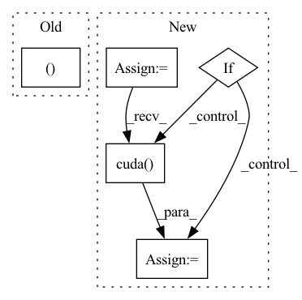

Pattern ID :13847
Before Change
m_parameter = torch.Tensor([0])
for parameter in list(model.parameters()):
m_parameter = torch.cat((m_parameter, parameter.data.view(-1) ))
return m_parameter[1:]
After Change
Squash model parameters or gradients into a single tensor.
parameters = [param.data.view(-1) for param in model.parameters()
] // vectorize each model parameter
m_parameters = torch.cat(parameters)
if cuda:
m_parameters = m_parameters.cuda()
return m_parameters
In pattern: SUPERPATTERN
Frequency: 3
Non-data size: 5
Instances Fragment ID: 46115222
Project Name: smilelab-fl/fedlab
Commit Name: 12925dd3ac83f8a9e1fbd4ed32fb3ec602217a77
Time: 2021-04-09
Author: 928255708@qq.com
File Name: fedlab_core/utils/serialization.py
M Class Name: AnonimousClass
N Class Name: AnonimousClass
M Method Name: ravel_model_params(2)
N Method Name: ravel_model_params(2)
M Parent Class:
N Parent Class:
M File Name: fedlab_core/utils/serialization.py
N File Name: fedlab_core/utils/serialization.py
M Start Line: 10
M End Line: 19
N Start Line: 8
N End Line: 15
Before Change
img_info["width"] = width
img_info["raw_img"] = img
img, ratio = preproc(img, self.test_size, self.rgb_means, self.std)
img_info["ratio"] = ratio
img = torch.from_numpy(img).unsqueeze(0).cuda()
After Change
img, _ = self.preproc(img, None, self.test_size)
img = torch.from_numpy(img).unsqueeze(0)
img = img.float()
if self.device == "gpu":
img = img.cuda()
if self.fp16:
img = img.half() // to FP16
with torch.no_grad(): Fragment ID: 46115221
Project Name: ar-ray-code/yolox-ros
Commit Name: 78036efeb8aaee86457e6a5217ebc0073297c4b3
Time: 2021-10-12
Author: ray255Ar@gmail.com
File Name: yolox_ros_py/yolox_ros_py/yolox_ros.py
M Class Name: Predictor
N Class Name: Predictor
M Method Name: inference(2)
N Method Name: inference(2)
M Parent Class: object
N Parent Class: object
M File Name: yolox_ros_py/yolox_ros_py/yolox_ros.py
N File Name: yolox_ros_py/yolox_ros_py/yolox_ros.py
M Start Line: 59
M End Line: 70
N Start Line: 61
N End Line: 90
Before Change
assert inMask.dim() == 4, "mask must be 4 dimensions"
inMask = inMask.float()
ntimes = 2**nlayers
inMask = F.interpolate(inMask, (inMask.size(2)//ntimes, inMask.size(3)//ntimes ), mode="nearest")
inMask = inMask.detach().byte()
return inMaskAfter Change
conv = nn.Conv2d(1,1,4,2,1, bias=False)
conv.weight.data.fill_(1/16)
convs.append(conv)
lnet = nn.Sequential(*convs)
if inMask.is_cuda:
lnet = lnet.cuda()
output = lnet(inMask)
output = (output > threshold).float().mul_(1)
return output Fragment ID: 46115218
Project Name: kumapowerliu/rethinking-inpainting-medfe
Commit Name: 17d04d208950c9c4e2e8bc5251cf06205ec15285
Time: 2020-11-07
Author: 33801357+KumapowerLIU@users.noreply.github.com
File Name: util/util.py
M Class Name: AnonimousClass
N Class Name: AnonimousClass
M Method Name: cal_feat_mask(3)
N Method Name: cal_feat_mask(2)
M Parent Class:
N Parent Class:
M File Name: util/util.py
N File Name: util/util.py
M Start Line: 78
M End Line: 83
N Start Line: 76
N End Line: 93